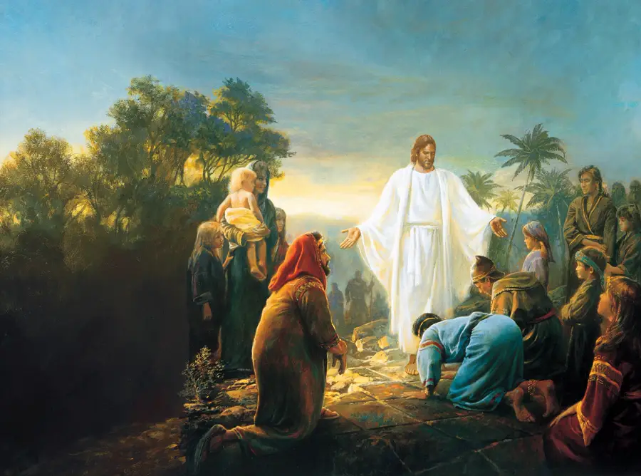

El Libro de Mormón y la Biblia: dos testamentos, un mismo Jesucristo.
La Biblia y el Libro de Mormón no se contradicen — se complementan. Ambos contienen la palabra de Dios, las enseñanzas de Jesucristo y el testimonio de profetas que vivieron en diferentes partes del mundo. Juntos forman un testimonio más completo de Jesús como Salvador del mundo.
Te invitamos a estudiar las Escrituras con nosotros en un ambiente de respeto, amistad y aprendizaje. No importa cuánto sepas — lo importante es el deseo de aprender y acercarte a Dios.

No hay prisa, no hay plazos. Puedes estudiar una vez a la semana o cuando tu horario lo permita. Lo importante es que disfrutes el proceso de aprender y crecer espiritualmente. Si quieres, también podemos regalarte un ejemplar gratuito del Libro de Mormón para que lo leas por tu cuenta.
Contáctanos y programaremos una sesión en el momento y lugar que te convengan.
Quiero estudiar las Escrituras